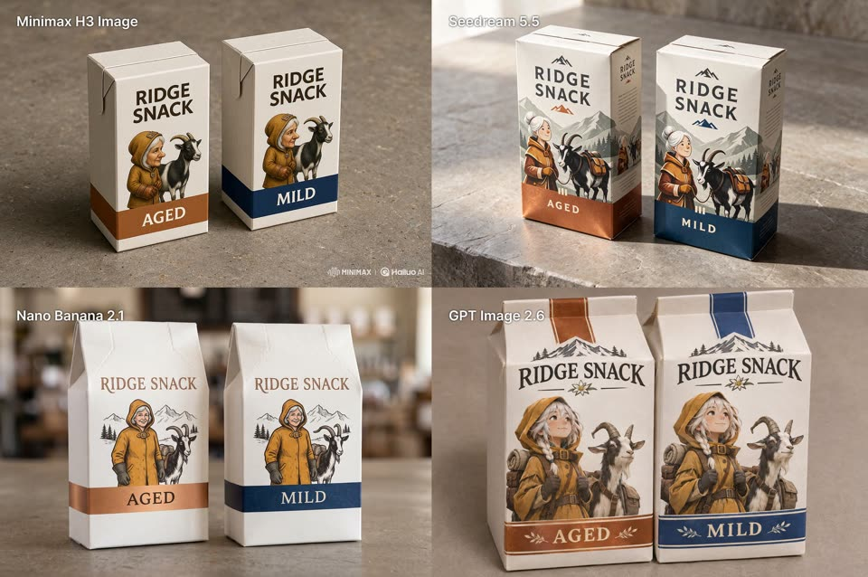

MiniMax H3 Image vs Seedream 5.5 vs Nano Banana 2.1 vs GPT Image 2.6: two matching snack cartons for a fictional Alpine brand (exact text, matched mascot)

A packaging-consistency test on the new MiniMax H3 Image (early access 2026-11-09) against three rivals, with the creator's scorecard per model. The prompt is a product-mockup checklist: "exactly two adjacent milk-white cartons", one original mascot (a white-haired delivery woman in an ochre hooded coat with a pack goat that has "one bent left horn") repeated on both, two accent bands, exact print strings ("RIDGE SNACK", "AGED", "MILD"), and "Match the mascot's nose, hood buckle, glove shape, and the goat's horn on both cartons". It ends with the camera and surface ("Slight view from above… real folded-paper edges, empty warm gray countertop"). The creator picked Seedream 5.5 as the winner (pack goat, gloves, matching mascot, correct text). No model drew the bent horn, which is worth knowing for asymmetric details. Reusable for SKU-variant packshots.
Prompt
A realistic on-shelf product mockup of exactly two adjacent milk-white cartons for a fictional Alpine snack brand. Both cartons show the same original white-haired delivery woman mascot in a tiny ochre hooded coat, standing beside a black-and-white pack goat with one bent left horn. Carton on the left has a copper accent band, and carton on the right has a deep blue accent band. Match the mascot's nose, hood buckle, glove shape, and the goat's horn on both cartons. Print exactly “RIDGE SNACK” at the top of each package and “AGED” on the copper band, “MILD” on the blue band. Slight view from above to show both label faces, real folded-paper edges, empty warm gray countertop.
Our Seedance 2.5 adaptation
[ADAPTED for Seedance 2.5 by Grok Bot; not the creator's prompt. Follows the official BytePlus Seedance 2.5 prompt guide and its official sd25-pe prompt-optimizer skill: parameters only on the API line (not in the prompt body), subject + action + scene, then visuals, camera (move, subject, start, direction, arrival) and sound; only the source's own exclusions are kept.] API: duration 5, ratio 3:2, resolution 1080p, generate_audio false; first_frame = the chosen model's two-carton still. 【Subject】Exactly two milk-white snack cartons side by side for a fictional Alpine brand, each printed "RIDGE SNACK" with the same mascot (white-haired delivery woman in an ochre hooded coat beside a pack goat); copper band "AGED" on the left, deep blue band "MILD" on the right. 【Action】The cartons stay still; a soft band of window light slides slowly from left to right across both label faces, picking up the folded-paper edges. 【Camera】Slightly above, slow straight push in that ends with both label faces filling the frame; no rotation. 【Visuals】Real folded paper, empty warm grey countertop, calm natural light. Keep all printed text and both mascots identical to the first frame; no extra cartons.
Tags: packaging mockup, SKU variants, exact text, mascot consistency, fictional brand, asymmetric detail test, model comparison, MiniMax H3 Image, Seedream 5.5, GPT Image 2.6